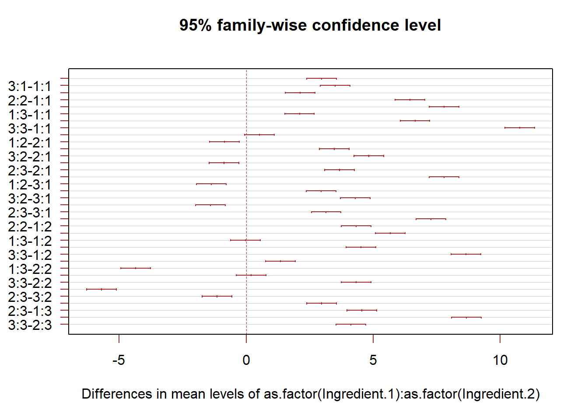

Chapter 3 Two-way ANOVA
3.1 Experiments with two (or more) factors
- Randomized experiments with two treatments
- Stratified randomized Experiments (also known as randomized block design)
- Auditor training data
- Project STAR
- Reasons for stratification: practical and statistical
- Sampling scheme for a stratified randomized experiment
- Question of interest, null hypotheses, and their causal interpretation.
- Intuition of hypothesis testing.
Auditor training
We can check whether stratification is efficient on the auditor training data.
Description of the auditor training data: There are three training methods for the auditors and the response \(Y\) is a proficiency score after the training are completed. Ideally we would like to compare the three methods among those who are as similar as possible in their educational background. How do we achieve this? One way is compare the three different training methods among those whose time since graduation from college are about the same. Suppose then we have ten such groups (of three individuals each). Group 1 consists of those who graduated recently, group 2 people graduated between one and two years ago, and group 10 consists of those who graduated some time in the past (say, ten years or more). Time since graduation is called the block (or a blocking factor) and treatment is the training method.
Audit <- read.csv(file="./data/AuditorTraining.csv", header=TRUE, sep=",")
# Draw the interaction plot:
interaction.plot(Audit$Block, Audit$Method,Audit$Proficiency)# Fit the model with blocks:
anova.block<-aov(Proficiency~as.factor(Block)+as.factor(Method),data=Audit)
anova.random<-aov(Proficiency~as.factor(Method),data=Audit)
mse.block<-sum(anova.block$residuals^2)/anova.block$df.residual
mse.random<-sum(anova.random$residuals^2)/anova.random$df.residual
(E=mse.random/mse.block)## [1] 3.2Simulation
We can also explore the properties of blocking using simulation.
# A simple simulation for stratification
set.seed(10928)
# Data generating mechanism:
n=40;n.strata=10;
X= sample(x=(1:n.strata),size=n,replace=TRUE);
ACE=4; coef.X=2;
Y.1=ACE+coef.X*X+rnorm(n,mean=0,sd=1); # potential outcome
Y.0=coef.X*X+rnorm(n,mean=0,sd=1); # potential outcome
trt= sample(1:n,size=(n/2),replace=FALSE);Z=rep(0,n);Z[trt]=1; # randomization
Z.s=rep(0,n);
for (i in 1:n.strata){# randomization within stratum
id.stratum= which(X==i);
trt= sample(id.stratum,size=floor(length(id.stratum)/2),replace=FALSE);
Z.s[trt]=1;
}
Y=Y.1*Z+Y.0*(1-Z); # observation w/o stratification
Y.s=Y.1*Z.s+Y.0*(1-Z.s); # observation w stratification # Analysis, w/o stratification
lm.vanilla=summary(lm(Y~Z));
lm.X=summary(lm(Y~Z+X));
plot(y=Y,x=X,pch=16,col=c('red','blue')[Z+1])
legend(x=1.1,y=22,legend=c('Trt','Ctrl'),col=c('red','blue'),pch=16)
text(x=5.1,y=5,labels=paste('Without X, Est. ACE = ',round(lm.vanilla$coef[2,1],2), 'with s.e.', round(lm.vanilla$coef[2,2],2),sep=' ' ),pos=4 )
text(x=5.1,y=2,labels=paste('With X, Est. ACE = ',round(lm.X$coef[2,1],2), 'with s.e.', round(lm.X$coef[2,2],2),sep=' ' ),pos=4 )Figure 3.1: Estimation of ACE with and without adjusting for X
# Analysis, w/o stratification
lm.simple=summary(lm(Y.s~Z.s));
lm.strat=summary(lm(Y.s~Z.s+X));
plot(y=Y.s,x=X,pch=16,col=c('red','blue')[Z+1])
legend(x=1.1,y=22,legend=c('Trt','Ctrl'),col=c('red','blue'),pch=16)
text(x=5.1,y=5,labels=paste('Without X, Est. ACE = ',round(lm.simple$coef[2,1],2), 'with s.e.', round(lm.simple$coef[2,2],2),sep=' ' ),pos=4 )
text(x=5.1,y=2,labels=paste('With X, Est. ACE = ',round(lm.strat$coef[2,1],2), 'with s.e.', round(lm.strat$coef[2,2],2),sep=' ' ),pos=4 )Figure 3.2: Estimation of ACE with and without adjusting for X under stratified randomization
# Repeat the above procedure 10000 times to evaluate the efficiency
# Wrap up the code in one function
strat.sim<-function(ACE){
n=40;n.strata=10;
X= sample(x=(1:n.strata),size=n,replace=TRUE);
coef.X=5;
Y.1=ACE+coef.X*X+rnorm(n,mean=0,sd=1); # potential outcome
Y.0=coef.X*X+rnorm(n,mean=0,sd=1); # potential outcome
trt= sample(1:n,size=(n/2),replace=FALSE);Z=rep(0,n);Z[trt]=1; # randomization
Z.s=rep(0,n);
for (i in 1:n.strata){# randomization within stratum
id.stratum= which(X==i);
trt= sample(id.stratum,size=floor(length(id.stratum)/2),replace=FALSE);
Z.s[trt]=1;
}
Y=Y.1*Z+Y.0*(1-Z); # observation w/o stratification
Y.s=Y.1*Z.s+Y.0*(1-Z.s); # observation w stratification
lm.vanilla=summary(lm(Y~Z));
lm.X=summary(lm(Y~Z+X));
lm.simple=summary(lm(Y.s~Z.s));
lm.strat=summary(lm(Y.s~Z.s+X));
est.ACE=c(lm.vanilla$coef[2,1],lm.X$coef[2,1],lm.simple$coef[2,1],lm.strat$coef[2,1])
return(est.ACE)
}
ACE=4;
sim.result=replicate(n=1e4,strat.sim(ACE=ACE));(mse=apply(sim.result-ACE,MARGIN=1,sd))## [1] 4.59 0.32 1.36 0.32Q: Why conducting stratify randomization given the simulation results?
For more discussion, see Chapters 6 and 8 in ANOVA: A Short Intro Using R by Lukas Meier.
3.2 Two-way ANOVA
3.2.1 A motivating example: Hey fever relief data set
For the Hay Fever Relief example, 9 compounds for Hay Fever Relief are made by varying levels of the two basic ingredients. Ingredient 1 (factor A) has \(a = 3\) levels: low \((i = 1)\), medium \((i = 2)\) and high \((i = 3)\). Similarly, ingredient 2 (factor B) has \(b = 3\) levels: low \((j = 1)\), medium \((j = 2)\) and high \((j = 3)\). A total of 36 subjects (suffering from hay fever) are selected and each of the 9 compounds are given to randomly selected \(n = 4\) individuals.
3.2.2 A two-way ANOVA model
- Cell mean model
- Decomposition of the means, and their estimators
- Additive models
- Why additive models?
- Estimators of the means
- Decomposition of sum of squares, and their properties
3.2.3 Statistical inference
- F-statistics based on sums of squares
- Hypothesis testing
- Test for interaction effects
- Test for main effects
- Alternative test if interaction can be ignored (additive models)
- (Simultaneous) confidence intervals with and without interactions
- Bonferroni
- Tukey
- Scheffe
3.2.4 Model diagnostics
- Similar to those for one-way ANOVA
3.2.5 Strategy for data analysis
Using the Hey Fever data as an example.
Step 0. Exploratory data analysis.
Hay <- read.csv(file="./data/HayFever.csv", header=TRUE, sep=",")
# Use a slightly different visualization:
pairs(Hay,pch=16,col='red',cex=1.5)Figure 3.3: Box plot with jittered data points for the Hay Fever data.
# Or draw the main effect plots
plotmeans(Relief~Ingredient.1,data=Hay,xlab="Ingredient 1",ylab="Relief", main="Main effect, Ingredient 1") Figure 3.4: Main effect plot for ingredient 1
plotmeans(Relief~Ingredient.2,data=Hay,xlab="Ingredient 2",ylab="Relief", main="Main effect, Ingredient 1") Figure 3.5: Main effect plot for ingredient 2
interaction.plot(Hay$Ingredient.1, Hay$Ingredient.2, Hay$Relief)Figure 3.6: Interaction plot
Step 1. Test whether interaction effects are presented.
# We can use the regression form here
full_model=lm(Relief~as.factor(Ingredient.1)+as.factor(Ingredient.2)+as.factor(Ingredient.1)*as.factor(Ingredient.2),data=Hay);
reduced_model=lm(Relief~as.factor(Ingredient.1)+as.factor(Ingredient.2),data=Hay);
anova(reduced_model,full_model)## Analysis of Variance Table
##
## Model 1: Relief ~ as.factor(Ingredient.1) + as.factor(Ingredient.2)
## Model 2: Relief ~ as.factor(Ingredient.1) + as.factor(Ingredient.2) +
## as.factor(Ingredient.1) * as.factor(Ingredient.2)
## Res.Df RSS Df Sum of Sq F Pr(>F)
## 1 31 31.05
## 2 27 1.63 4 29.4 122 <2e-16 ***
## ---
## Signif. codes: 0 '***' 0.001 '**' 0.01 '*' 0.05 '.' 0.1 ' ' 1The test result show that interaction effects are very unlikely to be absent from this data set. This means that we need to treat each combination as a unit, whereas we can compare each type of main effects separately. In the Hay Fever data, we naturally want to the find the combination of ingredients that is most effective. We can use the Tukey-Kramer method for this task.
library(stats)
alpha=0.05;
anova.fit<-aov(Relief~as.factor(Ingredient.1)+as.factor(Ingredient.2)+as.factor(Ingredient.1)*as.factor(Ingredient.2),data=Hay)
T.ci=TukeyHSD(anova.fit,conf.level = 1-alpha)
plot(T.ci, las=1 , col="brown")
# We only need to pay attention to the differences of the two largest means
idx=list();
idx[[1]]=Hay$Ingredient.1;idx[[2]]=Hay$Ingredient.2;
(means.comb=tapply( Hay$Relief, INDEX=idx,mean))## 1 2 3
## 1 2.5 4.6 4.6
## 2 5.4 8.9 9.1
## 3 6.0 10.3 13.2# For model diagnostics, we can use the default plotting function of aov()
plot(anova.fit)3.2.6 Special case: one observation per cell
- Interaction effects are no longer identifiable
- Estimation and testing
- Tukey’s test of additivity
3.2.7 Unbalanced two-way ANOVA
- The model is the same as for the balanced case
- Estimators for the means and variances
- Hypothesis testing
- Interaction effects
- Main effects
- Missing data in the one observation per cell case
3.3 Learning Objectives
- Students are able to write down an appropriate two-way ANOVA model given a new dataset.
- Students understand the basic properties of the various types of two-way ANOVA models.
- Students recognize the assumptions associated with each method, and can find appropriate tests to verify the assumptions.
- Students can implement the aforemened tasks in
R. - Students can seek help in coding using the Internet.